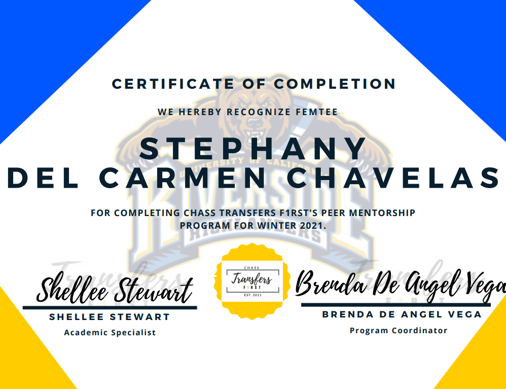
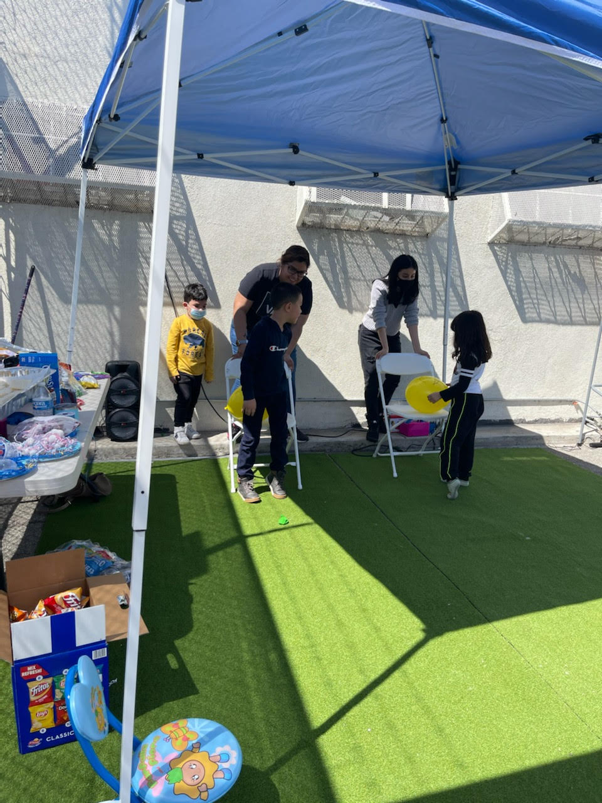
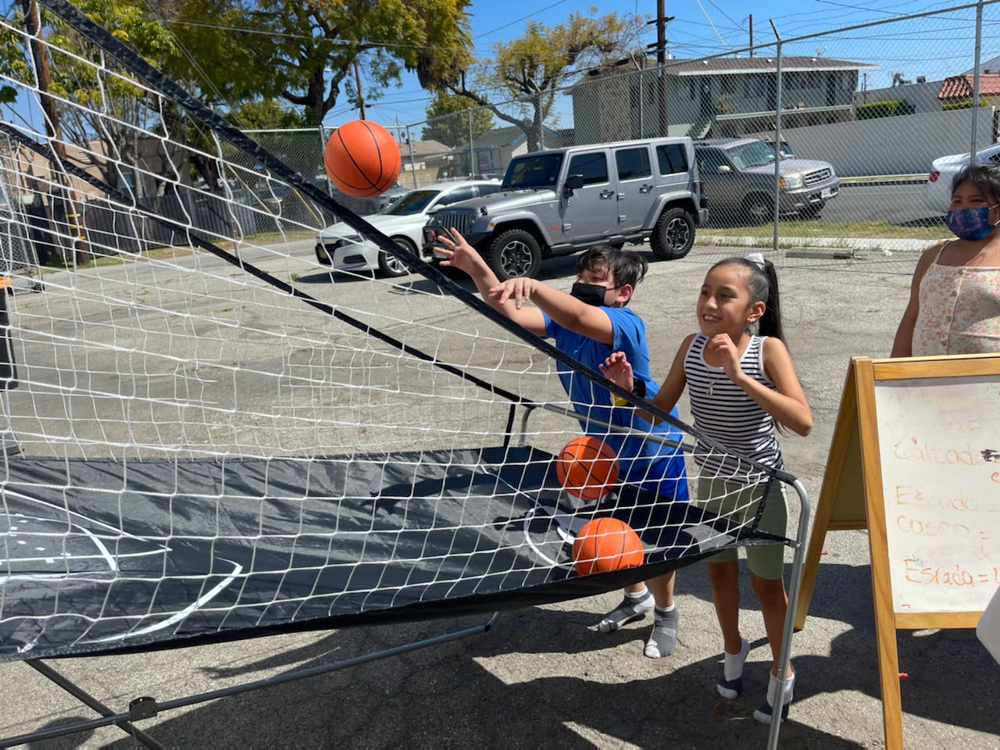
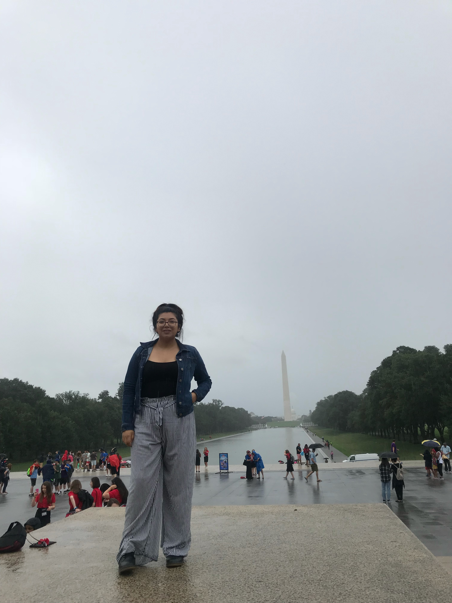
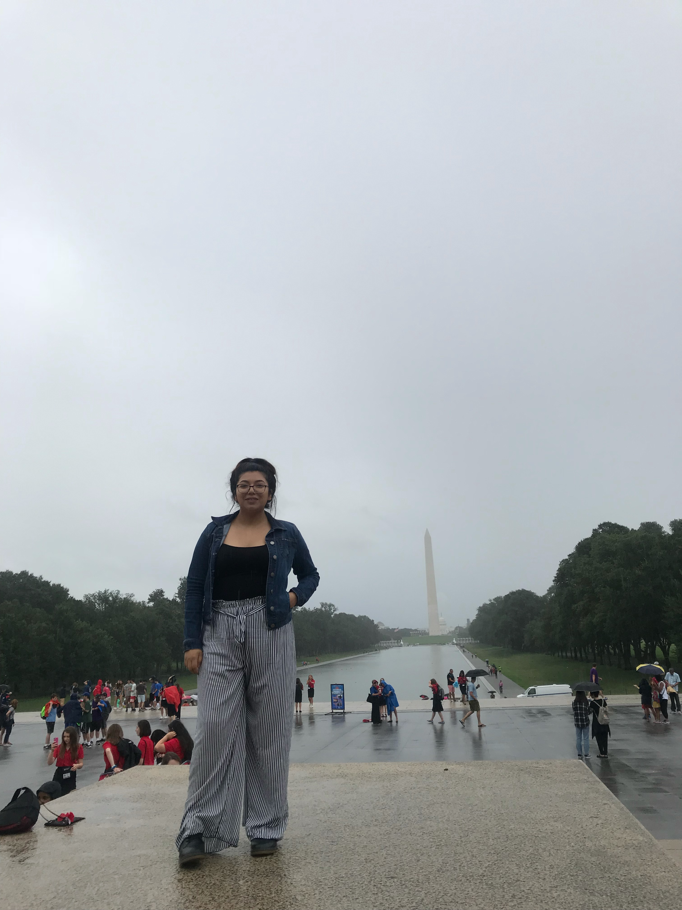
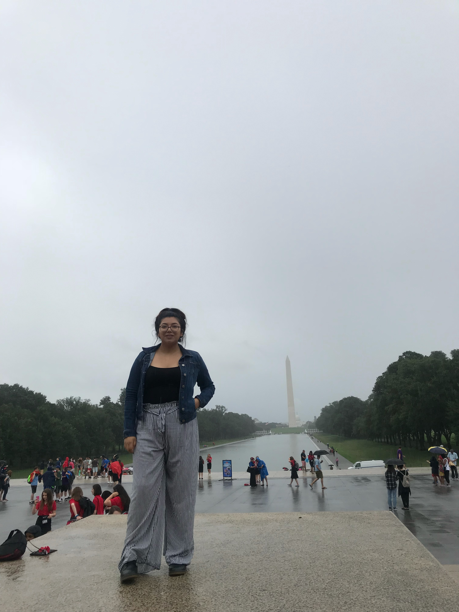

Stephany Del Carmen
My name is Stephany I am the oldest of four and a first-generation college student. People can describe as a honest and loving person who knows what to do in order to achieve and make it into something. My hardwork and dedication will never fail
me and challenges are alwasy welcomed because it's a learning experience that everyone will face.
As I mentioned earlier, I am a first-generation college student who had to manage everything on my own becasue my parents had no knowledge
how education works after high school. I was the fist to also graduate and receive my dimpoma which was big stepping stone for my family especially for my parents because all their hardwork was finally paying off. After high school I went to
community college as a safety net because I was comeplety lost and had no guide of what I wanted to be. Learning in a ne environemt without the help of my family was nerve wrecking because I was finally in control of what steps I needed to take
in order to achieve my goals, which where to become a counselor.
Eventually, I learned there were resources that I qualified or that the school offered that help me in my transtioned to college that I was able to find the right classes
that I needed to complete in order to transfer to a university. I faced challenges with certain classes, but that didn't stop me from overcoming and asking for additional help. Staying after school and networking with teachers and students helped
me gained confidence I knew I always had. Once the time came for me to get my Associates Degree for Transfer in Anthropology; I was finally on my way to the University of Riverside to continue my goal.
Experience
Receptionist
• Addressed the calls and responded to any question the caller
• Assisted colleagues in decorating the office
• Organized paperwork ● Running errands around the school
Volunteer
• Communicated with the fellow community
• Informed them with information of the candidate ● Worked on campaigns such as posters/flyers
Teaching Assistant
• Help the Teacher take roll call
• Translate Bible verses or stories to the kids from Spanish to English
• Help the kids understand the main topic of the day
• Create games for the kids
Education
East Los Angeles College
University of California Riverside
Portfolio



 

